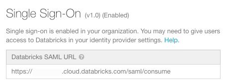
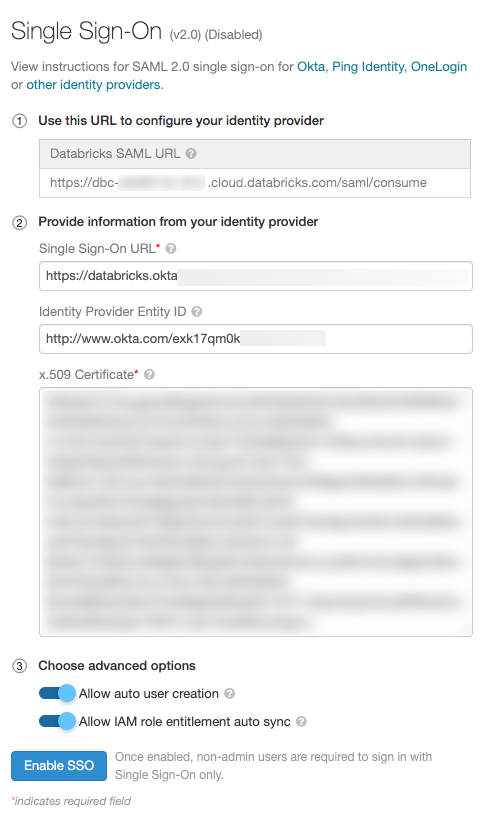
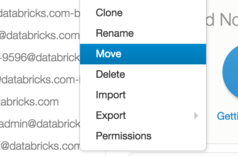

Set up SSO for your workspace
This article hows how to configure single sign-on (SSO) to authenticate to Databricks workspaces using your organization’s identity provider.
Note
Workspace-level SSO can only be configured when unified login is disabled. When unified login is enabled on a workspace, the workspace uses the same SSO configuration as your account. Databricks recommends enabling unified login for all workspaces. See Unified login.
Overview of workspace SSO setup
Workspace-level single sign-on (SSO) enables you to authenticate your users to your Databricks workspace using your organization’s identity provider. SSO for workspace users requires the SAML 2.0 protocol.
Note
Workspaces that are not on the E2 version of the Databricks platform default to version 1 of SAML. To upgrade a workspace to use version 2, contact your Databricks account team.
Workspace-level SSO can only be configured when unified login is disabled.
Unified login
Preview
Unified login is currently in Public Preview for accounts created before June 21, 2023. Unified login is generally available for accounts created after June 21, 2023.
Unified login allows you to manage one SSO configuration in your account that is used for the account and Databricks workspaces. When SSO is enabled on your account, you can choose to enabled unified login for all workspaces or for selected workspaces. Unified login workspaces use the account-level SSO configuration, and all users, including account and workspace admins, must sign in to Databricks using SSO. You cannot manage SSO separately on the workspace-level in a unified login enabled workspace. Databricks recommends that you enable unified login for all workspaces.
If your account was created after June 21, 2023, unified login is enabled on your account by default for all workspaces, new and existing, and it cannot be disabled.
To enable unified login, see Set up SSO in your Databricks account console.
Workspace SSO application examples
You can read the instructions on how to configure SSO to the following identity providers:
- SSO with Microsoft Windows Active Directory for your workspace
- Configure AWS SSO for your workspace
- SSO with Microsoft Entra ID (formerly Azure Active Directory) for your workspace
- SSO with Google Workspace (GSuite) for your workspace
- Configure SSO with Okta for your workspace
- Configure SSO with OneLogin for your workspace
- Configure SSO with Ping Identity for your workspace
The process is similar for any identity provider that supports SAML 2.0. If your identity provider is not listed above, follow the instructions below.
Enable workspace-level single sign-on
Workspace-level SSO can only be configured when unified login is disabled. See Unified login.
Warning
To prevent getting locked out of Databricks during single sign-on testing, Databricks recommends keeping the account console open in a different browser window.
Go to the workspace admin settings and select the Identity and access tab.
Click Manage next to SSO settings.
Go to your identity provider and create a Databricks application with the information in the Databricks SAML URL field.
In the Provide the information from the identity provider field, paste in information from your identity provider in the Databricks SSO.
(Optional) Enable automatic user creation, select Allow auto user creation. Auto user creation enables the users in identity provider to login to the workspace. If user’s account does not already exist in Databricks, a new account will be provisioned for them upon login. This is also known as just-in-time (JIT) provisioning. Auto user creation does not associate users with groups.
If you are configuring IAM credential passthrough with SAML 2.0 federation, select Allow IAM role entitlement auto sync.
Click Enable SSO.
Workspace sign-in process
When unified login is enabled the sign-in behavior is as follows:
All users, including admins, must sign in unified-login workspaces using SSO. They cannot sign in using their username and password.
All API users can use their username and password to make REST API calls. Databricks recommends using personal access tokens instead.
Note
If your account was created after June 21, 2023 and you want to restrict users from using their username and password for authentication, contact your Databricks account team.
When unified login is disabled and workspace-level SSO is enabled, the sign-in default behavior is as follows:
Non-admin users must sign in to Databricks using SSO. They cannot sign in using their username and password.
Workspace admin users can sign in with either SSO or their username and password.
API users can use their username and password to make REST API calls. Databricks recommends using personal access tokens instead.
If your Databricks account is on the Premium plan or above and unified login is disabled, you can limit workspace admin users’ and API users’ ability to authenticate using their username and password by configuring permissions using password access control, see Password permissions.
To learn about the account sign-in process when SSO is enabled, see Account sign-in process.
Migrate existing users to SSO
Note
When auto-user creation is enabled and a user’s current email address (username) with Databricks is the same as in the identity provider, then the migration will be automatic and you can skip this step.
If a user’s email address with the identity provider is different than the one with Databricks, then a new user based on the identity provider email will appear in Databricks when they login. Because non-admin users will no longer be able to login using their old email address and password, they will not be able to access the files in their existing Users folder.
We recommended the following steps to migrate files from their old Users folder to their new Users folder:
A workspace admin can remove the old user. This marks the user’s folder directory as defunct and the directory will follow all of the active users in the workspace folder list. All notebooks and libraries will still be accessible by workspace admins. All clusters and jobs created by the user will remain as is. If the user had any other ACLs set, enabling SSO will cause those to reset, and the workspace admin must manually set those ACLs for the new user.
The workspace admin can then move the old user’s folder into the new one as shown in the following figure.

Troubleshooting
Databricks recommends installing the SAML Tracer extension for Chrome or Firefox. SAML Tracer allows you to examine the SAML request sent from Databricks to the IdP and the SAML response sent from the IdP to Databricks.
If you can’t solve your problem using the following troubleshooting tips, contact the Databricks support team.
Verify the SSO version and URL
Go to the admin settings, then click the Identity and access tab.
Click Manage next to SSO settings.
Verify the SSO version, which is in parentheses next to Single Sign-On.
Verify the Databricks SAML URL. You provide this URL to the IdP. This URL changes if you upgrade your workspace to the E2 version of the Databricks platform or if your workspace is upgraded to SSO version 2.
Verify that the SAML response is signed
If the SAML response is not signed, login might fail with an error like We encountered an error logging you in. Databricks support has been alerted and will begin looking into this issue right away.
Follow these steps with SAML Tracer installed in your browser.
In an incognito window, open SAML Tracer by going to Tools > SAML Tracer.
Go to the Databricks workspace and attempt to log in using SSO.
In SAML Tracer, go to the Response tab.
If the response is signed, the
<saml2p:Response>element has a child<ds:signature>element. If the response is not signed, configure your IdP to sign the SAML response. For details on how to configure your IdP, follow the link for your IdP in Workspace SSO application examples.